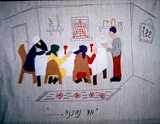

Photos by Jacqueline
Davidow
Page one

Wall-hanging, Patronato
Adela Dworin at her desk in the Patronato
Bookshelf at the Patronato
This building once housed the Zionist
Organization (upstairs),
then was shared (downstairs) with the Arab League (Christian Palestinians)
who now are the exclusive occupants and also run the Oasis Bar.
Davidow,
page two